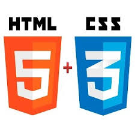

Bienvenidos a la OVI DE Diseño de sitios web, en ella encontraras enlaces de interés que lograran la explicación y manejo de diferentes herramientas a utilizar para lograr el desarrollo de un proyecto, tomando como punto de partida la explicación de que es diseño de sitios web, comprendiendo el uso de git y GitHub, logrando establecer la relación que se encuentra entre HTML5 Y CSS3.
* Elaborar una OVI con las temáticas principales del curso de diseños de sitios web brindando las herramientas necesarias para lograr una destreza en el manejo de GitHub y html5 combinado con css3.
*Brindar los conocimientos necesarios para lograr manejar el programa de repositorios y control de versiones git y GitHub para creación de proyectos.
*Investigar sobre las principales características de HTML5 Y CSS3 en el desarrollo de un diseño web.